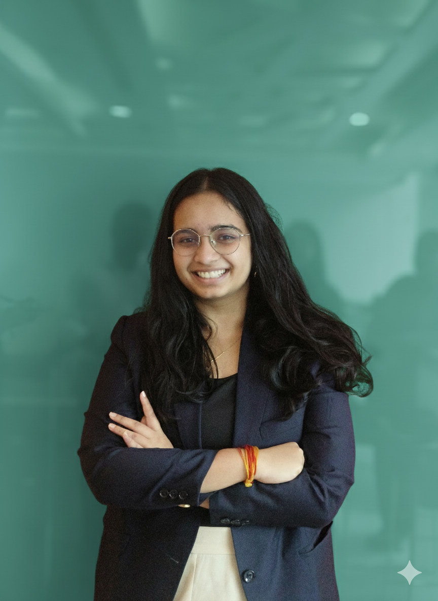

My journey as a civil engineering graduate who ventured into artificial intelligence, data science, and computational modeling has shaped me into a researcher eager to bridge disciplines and tackle complex real-world problems.
As a Civil Engineering graduate from IIT Bhubaneswar, my research foundation is defined by its span across Computational Mechanics, Artificial Intelligence, and Data-Driven Modeling. My journey is characterized by interdisciplinary rigor: from developing thermodynamically consistent neural network models for complex materials, to building ML systems for social good, and designing scalable AI safety guardrails in industry. This unique blend of experience in simulation, machine learning, and LLMs drives my pursuit of a PhD, where I aim to integrate diverse methodologies to contribute research that is both scientifically rigorous and societally meaningful.